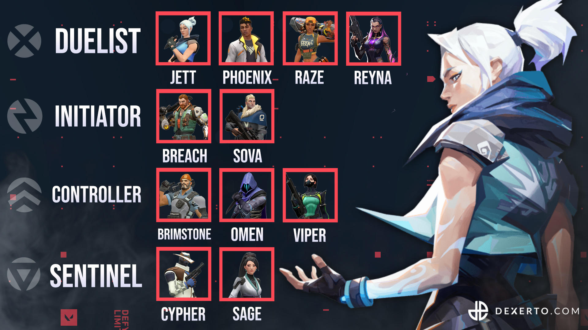

One of the most important aspects to know in Valorant is which characters you learn and specilize in. One of the keys to win a game is to have a balanced team composition. A balanced team is a team that has a variation of different characters. Each agent has their own roles and specialties. A good example of a reliable team comp is Reyna, Sage, Brimstone, Killjoy and Breach. With this team, you have a strong defense and attack side. This team has smokes for cover, healing, resurrection, flashes and abilities to watch flanks and hold off the enemy's attack.
These are the roles currently in the game: Duelist, Initator, Controller, and Sentinel. A good team has an agent in each of these roles. Some agents and their abilities are more useful on some maps than others.
There have been additional agents that have been added to this list.

Agent Voicelines
The agents' voicelines are important to pay attention to when playing Valorant, especially in competitive. Riot has specially made voicelines to help people with no mics able to communicate to your team. However the voicelines you need to learn and recognize will help you prepare for the incoming attack. This short audio recording will play each agent's ult voicelines so you can be prepared.You will first hear your teammates ult line and you will hear the enemy's ult line second.